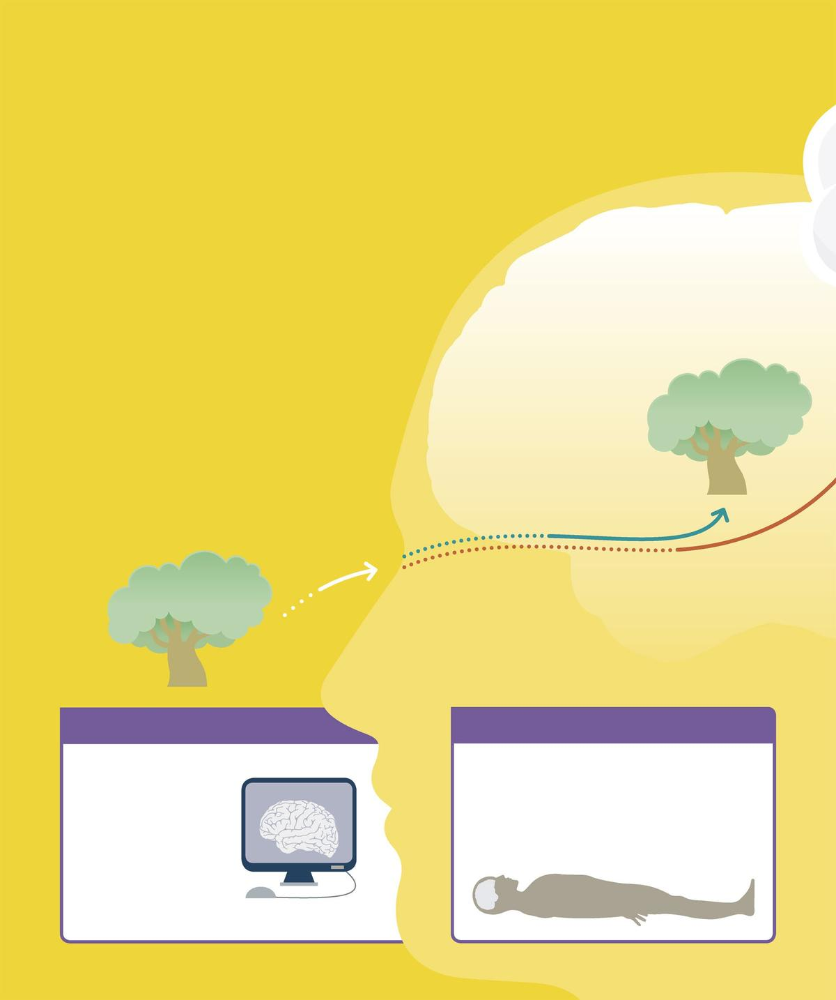
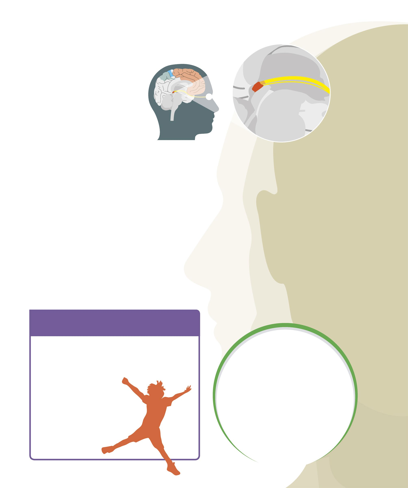
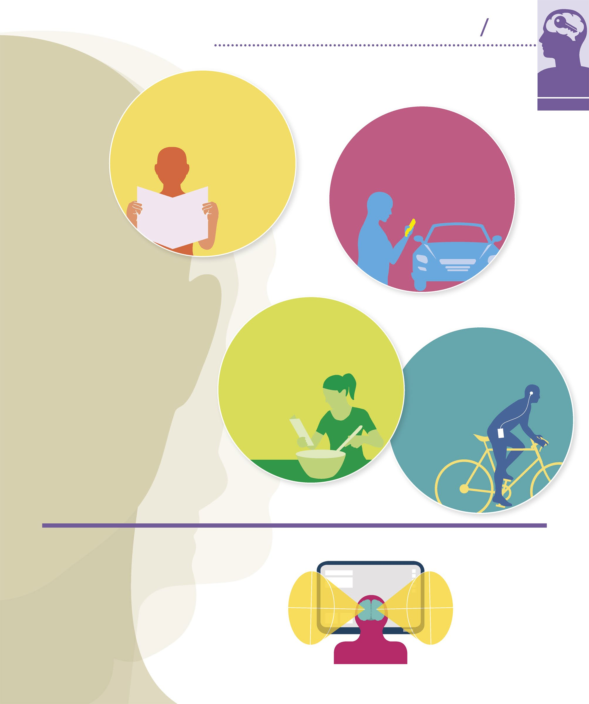
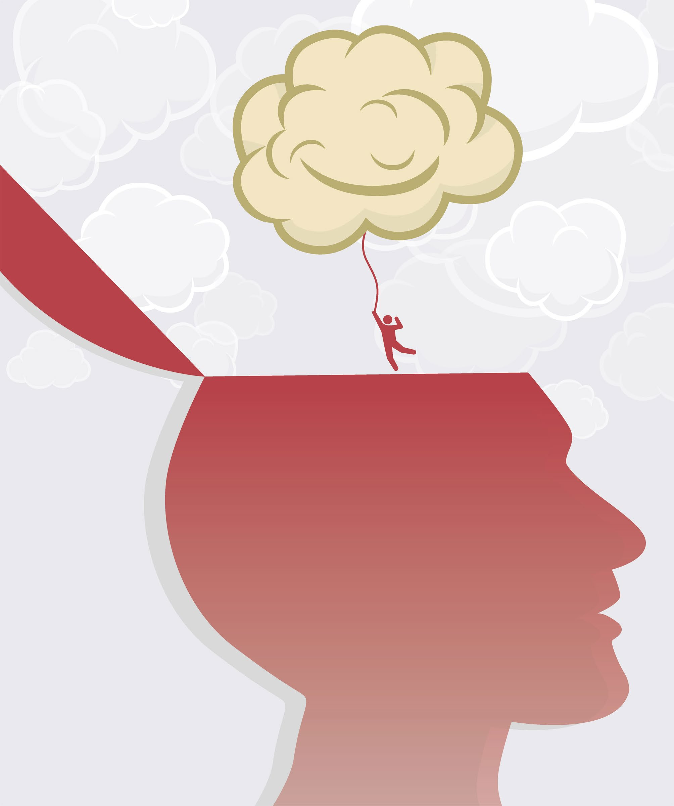
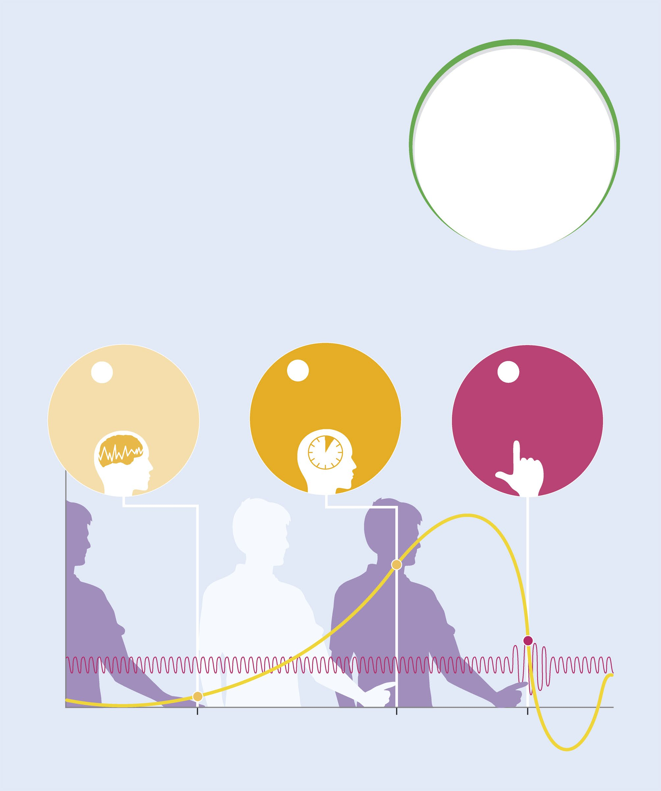
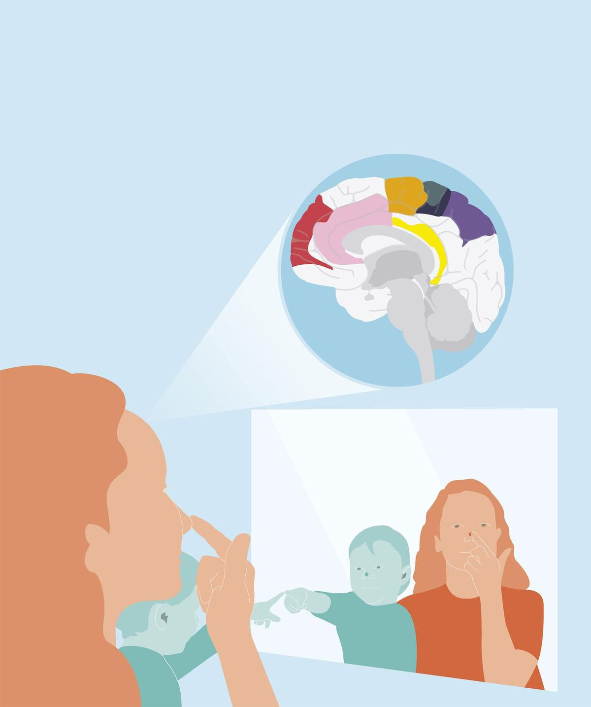

Phần 5 — Ý Thức & Bản Ngã

Ý thức là nhận thức của chúng ta về các kích thích bên ngoài (chẳng hạn như môi trường xung quanh) và các sự kiện bên trong (chẳng hạn như suy nghĩ và cảm xúc của chúng ta). Chúng ta có thể xác định hoạt động não bộ tạo ra nhận thức có ý thức, nhưng hiện tượng này phát sinh từ một cơ quan vật chất như thế nào vẫn còn là một bí ẩn.
Xác định vị trí của ý thức
Suy nghĩ, cảm xúc và ý tưởng của chúng ta đều là những hoạt động của não bộ—những sản phẩm có cơ sở thần kinh. Tuy nhiên, người ta vẫn chưa rõ liệu chính hoạt động thần kinh đó có tạo thành ý thức (hay “tâm trí”), hay nó chỉ đơn thuần liên quan đến ý thức. Đây là điểm khác biệt căn bản giữa hai thuyết về ý thức. Thuyết thứ nhất, chủ nghĩa đơn nguyên (monism), đồng nhất tâm trí với não bộ, trong khi thuyết thứ hai, chủ nghĩa song nguyên (dualism), xem tâm trí là tách biệt với não bộ và cơ thể.
Chủ nghĩa đơn nguyên Theo chủ nghĩa đơn nguyên, mọi suy nghĩ, cảm xúc và ý tưởng đều là sản phẩm của hoạt động não bộ diễn ra như kết quả của một kích thích. Chính hoạt động não bộ này là tri giác có ý thức về đối tượng. Nói cách khác, não bộ chính là tâm trí, và ngược lại.
Á N H S Á N G
Ở đâu là tâm trí? Khi chúng ta nhìn thấy một vật, đó là kết quả của việc não bộ tri giác một kích thích ánh sáng. Tuy nhiên, liệu hoạt động này trong não có trực tiếp dẫn đến ý thức, hay hoạt động đó liên kết với một tâm trí bên ngoài, vẫn còn đang được tranh luận.
THỰC TẾ ẢO
Ở một số nơi trên thế giới, định nghĩa pháp lý về cái chết là chết do thân não. Tổn thương không hồi phục ở thân não (xem tr.36) khiến nó không thể điều chỉnh các chức năng tự động cần thiết cho sự sống. Những chức năng này có thể được duy trì nhờ thiết bị y tế, nhưng người đó sẽ không bao giờ lấy lại được ý thức.
Thực tế ảo và thực tế tăng cường không còn bị giới hạn trong những cốt truyện khoa học viễn tưởng. Máy tính hiện được dùng để mô phỏng các kích thích bên ngoài—chẳng hạn như hình ảnh hay âm thanh—vốn cung cấp cho não bộ một thực tế thay thế.
- Ý thức là gì?
- Đ Ơ N N G U Y Ê N
- T Â M T R Í
- S O N G N G U Y Ê N
- CHẾT DO THÂN NÃO

Chủ nghĩa song nguyên Thuyết song nguyên lập luận rằng tâm trí (vốn phi vật chất) tồn tại bên ngoài não bộ (vốn là vật chất), nhưng hai bên tương tác với nhau. Hoạt động não bộ diễn ra như kết quả của kích thích thì liên quan đến tri giác có ý thức, còn bản thân tâm trí thì tách biệt.
Một số nhà khoa học thực sự tin rằng trí tuệ nhân tạo có thể được lập trình để có ý thức; số khác lại tin rằng ý thức không phải là thứ mà máy móc có thể học được.
Những điều kiện cần để có ý thức
Cơ sở thần kinh của ý thức vẫn là một lĩnh vực nghiên cứu, nhằm xác định các cấu trúc và quá trình trong não cần thiết để tạo ra một trải nghiệm có ý thức. Người ta cho rằng quá trình ý thức diễn ra ở mức độ của từng nơ-ron riêng lẻ chứ không phải ở mức độ của từng phân tử hay nguyên tử. Nhiều khả năng là để ý thức xuất hiện, phải có bốn yếu tố dưới đây.
P H Á T X U N G Đ Ồ N G B Ộ Ý thức có thể phụ thuộc vào tính đồng bộ của các nơ-ron. Các cụm nơ-ron phát xung cùng lúc sẽ “gắn kết” những tri giác riêng lẻ—chẳng hạn như thị giác, thính giác và khứu giác—để tạo nên một tri giác duy nhất.
T Ố C Đ Ô P H Á T X U N G C A O — S Ó N G N Ã O B E T A Một trạng thái ý thức bình thường xảy ra khi các nơ-ron phát xung ở tốc độ khá cao. Sóng beta (xem tr.42) xuất hiện khi các nơ-ron phát xung với tốc độ cao, và cho thấy sự cảnh giác cùng tư duy logic, phân tích.
H O Ạ T Đ Ô N G V Ù N G T R Á N Thùy trán có thể đóng vai trò quan trọng trong các khía cạnh của ý thức, bao gồm cả cảm giác suy ngẫm, cũng như việc điều phối các mức độ ý thức.
T H Ờ I Đ I Ể M
Não bộ ở trạng thái vô thức có thể mất nửa giây để xử lý các kích thích thành những tri giác có ý thức—nhưng não ta có khả năng khiến ta nghĩ rằng mình trải nghiệm mọi sự ngay lập tức.
- Ý THỨC VÀ BẢN NGÃ

Dành sự chú ý
Sự chú ý điều hướng ý thức của chúng ta (xem tr.162–163) để tập trung mãnh liệt hơn vào một đầu vào cảm giác cụ thể, chẳng hạn như hình ảnh hay âm thanh, và lờ đi những thông tin cạnh tranh. Quá trình chú ý bắt đầu từ các cơ quan cảm giác, vốn kích hoạt nhiều vùng khác nhau của não, bao gồm thùy trán và thùy đỉnh. Thùy đỉnh xử lý thông tin không gian, hướng sự chú ý đến một vùng không gian, trong khi thùy trán điều khiển mắt tập trung vào những vật thể cụ thể.
TI C N OP ER V E
Colliculus trên (superior colliculus) đóng vai trò như một hệ thống theo dõi, hướng đầu và mắt theo dõi một vật thể
Các vùng chú ý Chìa khóa để chú ý vào các kích thích thị giác là vùng mắt trán (frontal eye field), nằm ở thùy trán, và colliculus trên. Cùng nhau, chúng điều khiển mắt chúng ta tập trung vào một vật thể.
Chú ý là quá trình tập trung hoặc dồn sự chú ý vào một thông tin cụ thể. Não là cơ quan chính xử lý cả thông tin hành vi lẫn thông tin nhận thức, dù các bộ phận khác của cơ thể, chẳng hạn như mắt và tai, cũng cần thiết.
RỐI LOẠN TĂNG ĐỘNG – THIỂU CHÚ Ý
Rối loạn tăng động – thiểu chú ý (ADHD) là một rối loạn hành vi (xem tr.216) với các triệu chứng như mất chú ý và tăng động. Nguyên nhân chính xác của ADHD vẫn chưa được hiểu đầy đủ. Nghiên cứu cho thấy có thể có sự mất cân bằng chất dẫn truyền thần kinh hoặc nguyên nhân di truyền. Tuy nhiên, bất kỳ nguyên nhân di truyền tiềm ẩn nào của ADHD cũng được cho là phức tạp và khó có thể do chỉ một gen đơn lẻ gây ra.
Không có bằng chứng cho thấy thời gian chú ý cá nhân của chúng ta đang ngắn lại, nhưng một nghiên cứu gần đây gợi ý rằng thời gian chú ý tập thể của chúng ta—chẳng hạn như về mặt xã hội, chúng ta theo dõi một tin tức hay một chủ đề đang thịnh hành trong bao lâu—đang giảm xuống.
- Thùy đỉnh chứa các bản đồ không gian
- Thùy trán chứa vùng mắt trán
- Chú ý

C H Ú Ý C H Ọ N L Ọ C
Chú ý bền bỉ là khả năng tập trung vào một nhiệm vụ cụ thể, chẳng hạn như đọc một cuốn sách, trong một thời gian dài. Các nghiên cứu chụp ảnh não cho thấy các vùng vỏ não ở thùy trán và thùy đỉnh, đặc biệt là ở bán cầu não phải, có liên quan đến sự chú ý bền bỉ.
Chú ý chọn lọc là quá trình dồn sự chú ý vào một điều cụ thể, chẳng hạn như một vật thể hay âm thanh, đồng thời lờ đi môi trường xung quanh. Việc phớt lờ tiếng xe hơi trong khi chú ý vào điện thoại là một ví dụ về chú ý chọn lọc.
Các loại chú ý
Có nhiều loại chú ý khác nhau, và loại chú ý cần thiết thì phụ thuộc vào hoàn cảnh chúng ta đang ở. Chú ý bền bỉ và chú ý chọn lọc đều được dùng khi chúng ta cần tập trung hoàn toàn vào một kích thích. Chú ý luân phiên và chú ý chia sẻ được dùng khi có nhiều đầu vào mà chúng ta cần tập trung cùng lúc. Sự chú ý không phải là nguồn tài nguyên vô hạn, và việc dồn sự chú ý vào một điều gì đó có thể gây mệt mỏi, vì nó đòi hỏi một lượng năng lượng đáng kể.
C H Ú Ý C H I A S Ẻ
Chú ý luân phiên là khả năng chuyển đổi nhanh sự chú ý giữa các nhiệm vụ đòi hỏi phản ứng nhận thức rất khác nhau. Việc nấu bữa tối trong khi thỉnh thoảng xem công thức trong sách là một ví dụ về chú ý luân phiên giữa các nhiệm vụ khác nhau.
Chú ý chia sẻ được dùng để chúng ta có thể thực hiện hai hay nhiều hoạt động cùng lúc—chẳng hạn như đi xe đạp trong khi nghe nhạc. Loại chú ý này đôi khi được gọi là làm nhiều việc cùng lúc (multitasking).
Trong những giai đoạn xao nhãng, não quét môi trường
Não bộ không thể giữ cho sự chú ý của chúng ta liên tục. Thay vào đó, nó luân chuyển nhanh giữa hai trạng thái: chú ý và xao nhãng. Trong những giai đoạn xao nhãng, não quét môi trường để kiểm tra xem có điều gì quan trọng hơn mà nó nên chú ý hay không. Chu kỳ này được cho là mang lại lợi thế tiến hóa cho con người, cho phép chúng ta phản ứng nhanh với những cơ hội hay mối đe dọa mới.
Đi tìm rắc rối Ngay cả khi chúng ta nghĩ mình đang tập trung vào một nhiệm vụ, não vẫn kiểm tra môi trường để có thể chuyển hướng chú ý khi cần thiết.
- Ý THỨC VÀ BẢN NGÃ
- C H Ú Ý B Ề N B Ỉ
- C H Ú Ý L U Â N P H I Ê N
- Sự xao nhãng


Việc tập trung sự chú ý đòi hỏi não của bạn phải xử lý thông tin cụ thể. Học cách làm điều này trong một thế giới có quá nhiều yếu tố gây xao nhãng là rất quan trọng để bạn có thể học tập, hiểu biết và hoạt động đúng cách.
phản ứng, và việc truy xuất những ký ức dài hạn. Nghiên cứu cho thấy rằng một khi sự chú ý của bạn bị lệch khỏi việc hoàn thành một nhiệm vụ, trung bình có thể mất 25 phút để quay lại với công việc ban đầu. Vì vậy, lần tới khi bạn bị xao nhãng, hãy thử một trong những cách sau để tập trung sự chú ý: • Tránh xa những yếu tố có thể gây xao nhãng. Tắt mọi thiết bị điện tử và chuyển đến một nơi yên tĩnh. • Nếu nhiệm vụ trước mắt không tránh khỏi sự đơn điệu, hãy nhắc nhở bản thân lý do tại sao bạn lại làm nó. • Hãy tưởng tượng cảm giác thành đạt mà bạn sẽ có khi hoàn thành nhiệm vụ. Điều này có thể tạo thêm động lực. • Tăng dần và chậm rãi thời gian bạn cố gắng tập trung sự chú ý. Điều này có thể cải thiện khả năng tập trung của bạn.
Sự chú ý là một nguồn tài nguyên hạn chế, và việc tập trung nó phải được quản lý cẩn thận nếu bạn muốn hạn chế xao nhãng và tập trung vào các nhiệm vụ cụ thể. Khả năng tập trung sự chú ý khác nhau giữa các cá nhân. Nó chịu ảnh hưởng của cả sự quan tâm của bạn đối với nhiệm vụ trước mắt lẫn số lượng yếu tố gây xao nhãng mà bạn gặp phải. Nếu bạn thực sự quan tâm đến một điều gì đó, bạn thậm chí có thể không nhận thấy những yếu tố xao nhãng khác xuất hiện quanh mình. Đơn giản là vì bạn dễ tập trung sự chú ý vào một điều hơn khi bạn thấy gắn bó với nó. Vậy làm thế nào để bạn tăng khả năng tập trung sự chú ý của mình?
các yếu tố xao nhãng bên ngoài và bên trong. Khi bạn đọc cuốn sách này, hy vọng là bạn đang dồn sự chú ý vào những con chữ được viết trong văn bản. Tuy nhiên, não của bạn sẽ bị dội bom bởi một loạt yếu tố gây xao nhãng. Những yếu tố này có thể phát ra từ nhiều nguồn bên ngoài. Chẳng hạn, tivi có thể đang mở ở phía sau hay mọi người có thể đang trò chuyện quanh bạn. Bạn cũng có thể đối mặt với những yếu tố xao nhãng bên trong. Cơn đói có thể khiến bạn bắt đầu nghĩ về bữa tối sẽ ăn gì. Bạn có thể bỗng nhớ ra một nhiệm vụ quan trọng đã lọt khỏi tâm trí. Những kiểu suy nghĩ bên trong này được điều khiển bởi một vùng của não gọi là vỏ não trước trán trung gian (medial prefrontal cortex) (xem tr.30–31), vùng có liên quan đến việc ra quyết định, cảm xúc
Xao nhãng, xao nhãng, xao nhãng
Tập trung sự chú ý của bạn bao gồm việc dồn tâm trí vào một điều cụ thể, đồng thời lờ đi cả
- Làm thế nào để tập trung sự chú ý

Nếu bạn đang bế tắc với một vấn đề, việc để tâm trí lang thang có thể cho phép não thu thập thông tin từ vô thức của bạn và có thể đưa ra một giải pháp.
Nhiều hoạt động trong cuộc sống hàng ngày—từ cử động đến cảm xúc của chúng ta—không được kiểm soát một cách có ý thức. Thay vào đó, hoạt động vô thức trong não đứng sau rất nhiều hành động, suy nghĩ và hành vi của chúng ta.
Ý chí tự do
Khả năng lựa chọn một hướng hành động mà không bị giới hạn được gọi là ý chí tự do (free will), và có vẻ như chúng ta dùng tâm trí có ý thức để đưa ra những quyết định này. Tuy nhiên, nghiên cứu gợi ý rằng chúng ta có thể có ít quyền kiểm soát có ý thức đối với hành động của mình hơn là ta nghĩ. Các thí nghiệm cho thấy não bắt đầu lên kế hoạch cho một cử động trước một phần năm giây so với thời điểm chúng ta quyết định có ý thức là sẽ cử động.
Thí nghiệm của Benjamin Libet Nhà khoa học Benjamin Libet yêu cầu các đối tượng ghi lại thời điểm họ trở nên có ý thức về quyết định giơ một ngón tay. Đồng thời, sóng não và cử động cơ của họ được ghi âm lại.
1
Đối tượng ghi lại thời điểm chính xác khi họ nhận ra rằng mình muốn giơ ngón tay.
Điện não đồ (EEG, xem tr.42) cho thấy hoạt động não tăng lên trước một phần năm giây so với suy nghĩ có ý thức.
Điện cơ đồ (EMG), một thiết bị đo cử động cơ, ghi lại khoảnh khắc đối tượng giơ ngón tay.
Đối tượng nghỉ ngơi, với ngón tay nằm phẳng trên bàn
Hoạt động não vô thức lên kế hoạch cho cử động ngón tay
Khoảnh khắc đối tượng đưa ra quyết định có ý thức là giơ ngón tay
EMG ghi lại cử động cơ từ việc ngón tay được giơ lên
Thời điểm hoạt động não vô thức gửi tín hiệu đến cơ để giơ ngón tay
- LIỆU VÔ THỨC CỦA BẠN CÓ THỂ
- Cái vô thức
- GIÚP BẠN GIẢI QUYẾT VẤN ĐỀ?
- Suy nghĩ có ý thức
- Hoạt động não
- 2
- Ngón tay được giơ lên
- 3
- ĐỌC KẾT QUẢ
- EEG
- Hành động đã được lên kế hoạch
- ĐỌC KẾT QUẢ EMG
- –500
- –200
- 0
- Thời gian (mili giây)

Các tầng của ý thức
Vào đầu thế kỷ XX, nhà thần kinh học Sigmund Freud đã phổ biến ý nghĩ rằng tâm trí được chia thành ba tầng ý thức: tâm trí có ý thức (những quá trình tinh thần mà ta nhận biết), tiền ý thức (những quá trình mà ta không nhận biết nhưng có thể đưa vào ý thức), và vô thức (những quá trình tinh thần không thể tiếp cận nhưng ảnh hưởng đến hành vi của chúng ta). Cách nghĩ hiện đại hơn cho rằng có nhiều tầng ý thức, từ sự tự soi chiếu mãnh liệt đến giấc ngủ sâu nhất.
Nội quan Chúng ta xem xét suy nghĩ, hành động và cảm xúc của mình—chẳng hạn, chúng ta có thể suy đi nghĩ lại về một hành động mình đã làm.
Ý thức bình thường Chúng ta có cảm giác về quyền tự quyết—chúng ta tin rằng mình kiểm soát suy nghĩ và rằng chúng ảnh hưởng đến việc ta làm.
Hiểu biết vô thức Chúng ta có thể thực hiện những nhiệm vụ phức tạp, dù có thể không nhớ là mình đã làm vậy—chẳng hạn như không nhớ chuyến xe về nhà.
Thiếu ý thức Khi ngủ, chúng ta không tri giác thế giới quanh mình, cũng không có cảm giác về bản thân để trải nghiệm những điều như thời gian trôi qua.
Thuyết quá trình nghịch lý (ironic process theory)
Nếu được yêu cầu đừng nghĩ về một con gấu trắng, chúng ta gần như chắc chắn sẽ nghĩ về một con gấu trắng. Đó là vì một nỗ lực có chủ đích nhằm dập tắt một suy nghĩ lại khiến suy nghĩ đó dễ xuất hiện hơn. Hiện tượng này được giải thích bằng một ý tưởng gọi là thuyết quá trình nghịch lý. Ý tưởng cho rằng não vô thức tự giám sát để phát hiện sự xuất hiện của suy nghĩ không mong muốn—và, một cách nghịch lý, điều đó lại khiến ta nhận biết được suy nghĩ ấy. Đây là một lý do khiến việc bỏ thuốc lá trở nên khó khăn, hoặc khiến việc cố quên một ký ức tồi tệ hiếm khi có tác dụng—vô thức nhắc ta nhớ về những điều ta đang cố quên.
Năm 2006, hai nhà nghiên cứu người Hà Lan yêu cầu các đối tượng đưa ra một quyết định phức tạp trong một trong ba điều kiện: ít thời gian để cân nhắc; nhiều thời gian; hoặc nhiều thời gian nhưng có những yếu tố gây xao nhãng ngăn không cho họ suy nghĩ có ý thức về quyết định đó. Trong mọi trường hợp, những đối tượng bị xao nhãng đều làm tốt nhất. Kết quả gợi ý rằng con người có thể đưa ra quyết định tốt hơn khi vô thức hơn là khi có ý thức—dù thí nghiệm cũng cho thấy điều này chỉ đúng khi chúng ta đang đưa ra những quyết định phức tạp.
- Ý THỨC VÀ BẢN NGÃ
- 95 PHẦN TRĂM
- ĐƯA RA QUYẾT ĐỊNH

Vật lý và sinh lý Những điều kiện môi trường cực đoan, chẳng hạn như độ cao lớn hay trọng lực yếu hơn trong không gian, có thể gây ra các trạng thái biến đổi, cũng như việc nhịn ăn kéo dài và thao tác với hơi thở.
Một trạng thái ý thức biến đổi là bất kỳ tình trạng nào khác biệt đáng kể so với trạng thái ý thức bình thường của chúng ta (xem tr.162–163). Nó hầu như luôn tạm thời và luôn có thể đảo ngược.
Các loại trạng thái biến đổi Các trạng thái biến đổi có thể được xếp thành nhiều nhóm dựa trên cách chúng được gây ra. Tuy nhiên, tất cả các trạng thái biến đổi đều làm gián đoạn chức năng não theo một cách nào đó.
Tâm lý
Một trạng thái biến đổi có thể được gây ra thông qua một số tập tục văn hóa hay tôn giáo, chẳng hạn như thiền định hoặc các trạng thái xuất thần do nhảy múa hay đánh trống. Những ví dụ khác là tước đoạt cảm giác và thôi miên.
Tự phát
Bệnh tật và ốm đau có thể làm thay đổi trải nghiệm ý thức ở các mức độ khác nhau. Ví dụ gồm các rối loạn lo âu thần kinh như tâm thần phân liệt (xem tr.211), cũng như các cơn động kinh và hôn mê.
Các trạng thái biến đổi tự phát gồm buồn ngủ, mơ mộng ban ngày, trải nghiệm cận tử, và trạng thái ý thức xảy ra ngay trước khi bạn chìm vào giấc ngủ (gọi là trạng thái tiền giấc ngủ).
Dược lý Các thuốc hướng thần (làm thay đổi tâm trí), chẳng hạn như rượu, cần sa hay thuốc phiện, làm gián đoạn cách các chất dẫn truyền thần kinh của não hoạt động, từ đó thay đổi mức độ nhận biết và ý thức của người dùng.
Khi ở trạng thái ý thức bình thường, chúng ta nhận biết các kích thích bên ngoài (chẳng hạn như môi trường xung quanh) và các sự kiện bên trong (chẳng hạn như suy nghĩ của mình). Tuy nhiên, não có thể tạo ra nhiều trải nghiệm có ý thức phong phú hơn nhiều, bao gồm cả các trạng thái biến đổi. Bất cứ khi nào chúng ta bước vào một trạng thái biến đổi, các kiểu hoạt động của não thay đổi. Sự gián đoạn chức năng não này có thể do nhiều cách gây ra, bao gồm thay đổi lưu lượng máu và oxy đến não, hoặc cản trở chức năng của chất dẫn truyền thần kinh.
Điều này còn đang bị tranh cãi gay gắt, nhưng những người đã có trải nghiệm như vậy mô tả các yếu tố, chẳng hạn như cảm giác thời gian ngừng trôi, vốn phổ biến ở các trạng thái biến đổi khác.
- Do bệnh gây ra
- Trạng thái biến đổi là gì?

Ý THỨC VÀ BẢN NGÃ
Quá trình có kiểm soát và tự động Cách chúng ta thực hiện các quá trình có kiểm soát (những nhiệm vụ đòi hỏi sự nhận biết đầy đủ, chẳng hạn như giải một câu đố) và các quá trình tự động (những nhiệm vụ đòi hỏi rất ít sự chú ý, chẳng hạn như đọc sách) bị suy giảm.
Tự kiểm soát Chúng ta có thể gặp khó khăn trong việc kiểm soát hành động và cử động của mình, chẳng hạn như đi một đường thẳng khi say rượu. Việc kìm nén cảm xúc cũng có thể trở nên khó khăn, thường dẫn đến những cơn bật khóc hay hung hăng.
Nhận diện một trạng thái biến đổi
Ý thức là một dải liên tục từ mức cảnh giác cao đến hoàn toàn không nhận biết, với trạng thái “bình thường” nằm ở đâu đó ở giữa. Trong khi đó, các trạng thái biến đổi có thể nằm ở một trong hai phía của thang đo, với mức nhận biết cao hơn hoặc thấp hơn bình thường. Một trạng thái biến đổi có thể được nhận diện bằng nhiều tiêu chí khác nhau.
Mức độ nhận biết Trong một trạng thái biến đổi, mức độ nhận biết của chúng ta về các sự kiện đang diễn ra quanh mình—cũng như bên trong—có thể tăng hoặc giảm so với ý thức thức bình thường. Thường thì mức độ nhận biết của chúng ta bị giảm trong một trạng thái biến đổi.
Nhận biết cảm xúc Thường thì trong một trạng thái biến đổi, chúng ta có ít nhận biết cảm xúc hơn (trải nghiệm về cảm xúc), đồng thời thấy khó kiểm soát những cảm xúc đó. Điều này có thể khiến ta trở nên dịu dàng hơn hay hung hăng hơn, hoặc lo âu hơn.
Bóp méo tri giác và nhận thức Tri giác có thể bị thay đổi. Các quá trình bình thường để lưu trữ và truy xuất ký ức có thể trở nên rời rạc hơn hoặc kém chính xác hơn. Các quá trình tư duy có thể trở nên rối ren và kém logic hơn.
Định hướng thời gian Trong một trạng thái biến đổi, cảm giác về thời gian của chúng ta (xem tr.174–175) có thể bị bóp méo; thời gian có thể dường như chậm lại hoặc nhanh lên. Đó là vì ta ít nhận biết hơn về thời gian trôi qua, cũng như ta không nhận biết thời gian khi đang ngủ.
Các trạng thái biến đổi trong não
Sự giảm hoạt động ở thùy trán làm giảm khả năng lập luận và đưa ra quyết định
Hoạt động bị thay đổi ở thùy đỉnh bóp méo các phán đoán không gian và tri giác thời gian
Các trạng thái biến đổi có thể dẫn đến một loạt trải nghiệm, từ cảm giác hạnh phúc tột độ đến cảm giác kinh hãi. Những trải nghiệm này được tạo ra bởi một loạt hoạt động thần kinh đa dạng tương tự ở nhiều vùng khác nhau của não. Sự thay đổi chức năng não bình thường có thể khiến não ta bóp méo thông tin đầu vào, dẫn đến ảo giác thính giác hay thị giác, bóp méo trí nhớ, hoặc các ý tưởng hoang tưởng.
Đồi thị—vốn đóng vai trò cổng giữa hệ viền và vỏ não trán—có thể bị ức chế
Những thay đổi trong chức năng thùy thái dương dẫn đến những trải nghiệm không thể giải thích như ảo giác
Xác định vị trí các trạng thái biến đổi Trong một trạng thái biến đổi, hoạt động ở các vùng khác nhau của não có thể tăng hoặc giảm, làm bóp méo cách chúng ta tri giác thế giới.
Tín hiệu từ thành lưới, vốn đóng vai trò quan trọng trong ý thức, có thể bị giảm
- NGÀY

nhưng thanh thiếu niên và trẻ em 7–9 giờ ngủ mỗi đêm, (đặc biệt là trẻ nhỏ) Hầu hết người lớn cần cần nhiều hơn.
6 GIỜ SÁNG
Nếu bị đánh thức trong giấc ngủ REM, chúng ta có nhiều khả năng nhớ được những giấc mơ của mình hơn
Khi chúng ta ngủ, có vẻ như não của chúng ta đang nghỉ ngơi yên tĩnh, nhưng thực tế chúng đang bận rộn xử lý và lưu trữ
thông tin mà chúng ta đã học được trong suốt cả ngày.
Trong suốt đêm, chúng ta đi qua các giai đoạn ngủ khác nhau, chuyển từ ngủ nông sang ngủ sâu rồi sang giấc ngủ chuyển động mắt nhanh (REM). Các sóng não, được tạo ra bởi hoạt động điện của các nơ-ron ở vỏ não (xem tr.42), thay đổi ở mỗi giai đoạn. Khi giấc ngủ trở nên sâu hơn, các sóng trở nên chậm hơn (tần số thấp hơn) và có tổ chức hơn. Chúng ta lặp lại chu kỳ ngủ này sau mỗi vài giờ, nhưng tỷ lệ thì thay đổi; chúng ta có nhiều giấc ngủ sóng chậm hơn vào đầu đêm và nhiều REM hơn
1 GIỜ SÁNG
Trong giấc ngủ REM, cơ thể bị tê liệt, nhưng mắt thì lướt đi lại dưới mí
Ý thức Thức Não đang thức Tương tự như não lúc thức Ngủ nhẹ Cấp 1 Sóng chậm hơn Cấp 2 Mẫu hình giống lúc thức Ngủ REM Sóng không đều Sóng beta ngủ vào sáng sớm.
Các giai đoạn của giấc ngủ
Có bốn giai đoạn riêng biệt của giấc ngủ, và chúng ta đi qua mỗi giai đoạn nhiều lần trong một đêm. Trong giấc ngủ nhẹ, chúng ta dễ bị đánh thức. Một đêm không yên tĩnh.
12 GIỜ ĐÊM
Ở giấc ngủ sâu thì khó đánh thức hơn nhiều.
- CHÚNG TA CẦN BAO NHIÊU GIỜ NGỦ MỖI ĐÊM?
- NGỦ NÔNG
- 5 GIỜ SÁNG
- NGỦ SÂU
- nhịp tim và hơi thở
- Trong giai đoạn ngủ cấp 2,
- 4 GIỜ SÁNG
- trở nên thậm chí còn
- Giai đoạn thức trong đêm
- Giấc ngủ và Những giấc mơ
- 3 GIỜ SÁNG
- Cấp 1 là giai đoạn ngủ nhẹ nhất
- 2 GIỜ SÁNG
- Những đoạn ngủ sâu dài nhất là vào đầu đêm
- Sóng não trong giấc ngủ cấp 3 thì chậm và không đều
- 11 GIỜ TỐI

ỐNG BẠCH HUYỆT
Có bằng chứng cho thấy rằng khi chúng ta ngủ, một số tế bào não của chúng ta co lại, cho phép dịch não tủy chảy dễ dàng hơn giữa chúng. Dịch này mang đi bất kỳ chất thải nào đã tích tụ đến các ống bạch huyết,
Hải mã gửi những ký ức mới đến vỏ não tạo ra mảnh vụn về bản thân, thì không hoạt động
Mảnh vụn bị cuốn trôi bởi dịch não tủy
Vỏ não thị giác tạo ra hình ảnh nơi nó được đưa ra khỏi
Thần kinh lưới chuyển đổi giữa giấc ngủ và sự thức cho phép dịch đi qua Các tế bào đệm hình sao co lại, cơ thể.
Các vùng não cảm xúc rất hoạt động trong giấc ngủ REM, cũng như hầu hết vỏ não. Các thùy trán, vốn liên quan đến tư duy lý trí, thì ít hoạt động hơn nhiều.
Trong suốt ngày, hoạt động não của chúng ta tạo ra các sản phẩm phụ có thể trở nên độc hại nếu chúng tích tụ. Các nghiên cứu gần đây sử dụng chuột đã chỉ ra rằng giấc ngủ cho não một cơ hội để dọn sạch các sản phẩm phụ đó. Có vẻ như một điều tương tự cũng xảy ra ở người, điều này có thể giải thích một số tác động tiêu cực mà việc thiếu ngủ có thể gây ra đối với khả năng học tập, ghi nhớ và quản lý cảm xúc của chúng ta.
Không hoạt động
Các vùng của vỏ não trước trán không hoạt động, nên lý trí không được áp dụng cho giấc mơ Hạch hạnh nhân tạo ra cảm xúc
CHÚ GIẢI
thường căng thẳng hoặc tiêu cực. Một ý tưởng khác là những giấc mơ chỉ là “màn hình chờ” (screen savers) cho
Các nhà khoa học đã đưa ra giả thuyết rằng giấc mơ giúp chúng ta xử lý thông tin và cảm xúc gặp phải trong ngày và lưu trữ chúng vào trí nhớ dài hạn (xem tr.138–139). Một giấc mơ cũng có thể giống như một buổi diễn tập—não đang thử nghiệm các phản ứng trước những sự kiện cực đoan trong an toàn để chúng ta được chuẩn bị nếu sự kiện đó xảy ra trong cuộc sống thực.
Các nhà khoa học không biết tại sao chúng ta mơ, nhưng tâm trí, mà hoàn toàn không có mục đích thực sự nào.
Những vấn đề như mộng du, nói khi ngủ và tê liệt xảy ra khi não không chuyển tiếp sạch sẽ giữa các trạng thái ngủ. Điều này khiến một phần não thức trong khi các phần khác ngủ say.
Khi một người mộng du, các vùng vận động của não thức và hoạt động, nhưng nhận thức có ý thức và các vùng trí nhớ thì đang ngủ. Mọi người thậm chí còn có thể thực hiện những nhiệm vụ phức tạp như lái xe trong khi đang ngủ say.
- Ý THỨC VÀ BẢN NGÃ
- H Ệ T H Ố N G B Ạ C H H U Y Ệ T
- Các nơ-ron
- Vỏ não đỉnh, vốn kiểm soát nhận thức về
- Dòng chảy của dịch não tủy
- Đồi thị truyền tín hiệu đến vỏ não
- MẠCH MÁU
- Làm sạch não bộ
- DÀI NHẤT
- Hoạt động trong giấc ngủ REM
- Hoạt động
- Bộ não khi mơ
- RỐI LOẠN GIẤC NGỦ
- đang ngủ. Khi một người

Chúng ta có thể đo lường thời gian một cách khách quan—bằng giờ, phút và giây—với đồng hồ, nhưng não bộ cũng giúp chúng ta theo dõi sự trôi qua của thời gian. Các đồng hồ nội tại của chúng ta đều được đặt ở những tốc độ khác nhau và thậm chí còn thay đổi trong suốt cuộc đời ta.
Khái niệm của chúng ta về thời gian liên quan đến một mạng lưới thần kinh dính líu đến trí nhớ và sự chú ý. Các nơ-ron trong mạng lưới này phát xung, hay “dao động”, và não bộ dùng điều đó để giữ thời gian. Càng có nhiều dao động trong một giây được đo, chúng ta càng nghĩ rằng thời gian kéo dài lâu hơn. Các sự kiện (chẳng hạn như trải nghiệm cận tử), trạng thái tâm trí (chẳng hạn như trầm cảm), các chất kích thích (chẳng hạn như caffeine), và bệnh tật (chẳng hạn như bệnh Parkinson) đều có thể ảnh hưởng đến tốc độ phát xung của các nơ-ron, làm sai lệch tri giác về thời gian của chúng ta.
Phần trước của vỏ não trước trán
Đồng hồ dopamine Một trong những đồng hồ khác của não bộ được tạo thành từ sự dao động, hay chu kỳ, của dopamine chảy giữa chất đen (substantia nigra), các hạch nền (basal ganglia), và vỏ não trước trán (prefrontal cortex).
KHUNG HÌNH 4
Các khung hình 1 và 2 được xem như một gói, nên chúng ta chỉ thấy một sự kiện
Các khung hình 3 và 4 nằm trong những gói riêng biệt, nên chuyển động được xem như hai sự kiện
Các gói thời gian Một chu kỳ của đồng hồ não bộ bằng một “gói” thời gian, mà chúng ta ghi nhận như một sự kiện duy nhất. Cũng giống như một máy ảnh với tốc độ khung hình cao hơn sẽ ghi lại nhiều chi tiết hơn trong một chuỗi sự kiện, tốc độ phát xung thần kinh nhanh hơn sẽ tạo ra nhiều gói thời gian hơn, ghi nhận thêm 0,1 sự kiện.
ẢO ẢNH THỜI GIAN
Khoảng cách có thể làm sai lệch tri giác về thời gian của chúng ta. Nếu ba đèn nhấp nháy liên tiếp nhau với những khoảng thời gian bằng nhau (chẳng hạn 10 giây), nhưng khoảng cách giữa đèn “B” và “C” lớn hơn khoảng cách giữa “A” và “B,” thì sẽ tạo ra ảo ảnh rằng thời gian giữa lúc “B” và “C” nháy là dài hơn 10 giây.
“B” nháy 10 giây sau “A”
“C” nháy 10 giây sau “B”
- Hướng dòng chảy của dopamine
- Não bộ—người giữ thời gian
- Các hạch nền
- Chất đen
- KHUNG HÌNH 1
- KHUNG HÌNH 2
- KHUNG HÌNH 3
- Chu kỳ dopamine tăng gấp đôi tốc độ
- GÓI THỜI GIAN 1
- GÓI THỜI GIAN 2
- GÓI THỜI GIAN 3 0,3
- 0,2
- 0,25
- Thời gian (giây)
- A
- B
- C
- 4 IN (10 CM)
- 8 IN (20 CM)

Thời gian và tuổi tác
Có thể cảm thấy thời gian trôi nhanh hơn khi chúng ta già đi—một chuyến đi mà thời thơ ấu cảm thấy như vô tận thì trôi qua nhanh chóng khi trưởng thành. Một phần lý do cho điều này là tri giác về thời gian của chúng ta phát triển khi ta lớn lên. Khi còn là trẻ sơ sinh, chúng ta sống trong khoảnh khắc—chúng ta khóc nếu không được cho ăn đúng giờ, nhưng chúng ta không nhận biết được sự trôi qua của thời gian. Khi mới biết đi, chúng ta được dạy nhận biết về thời gian, và học được bao lâu để thực hiện các công việc hàng ngày, chẳng hạn như đánh răng. Đến khi lên sáu tuổi, chúng ta có thể ước lượng thời gian, áp dụng kiến thức của mình về độ dài của một việc vào những tình huống mới.
Các yếu tố ảnh hưởng đến tri giác thời gian
Khi trưởng thành, chúng ta ý thức hơn về thời gian, vì chúng ta có trách nhiệm và lịch trình. Những thói quen chuyển từ sự kiện này sang sự kiện khác có thể làm nhanh tri giác về thời gian của chúng ta. Tuy nhiên, cũng có các thuyết sinh học, tỷ lệ và tri giác giải thích tại sao thời gian dường như trôi nhanh hơn khi ta già đi.
Dopamine là chất dẫn truyền thần kinh chính tham gia vào việc xử lý thời gian. Một số loại thuốc, chẳng hạn như methamphetamine, kích hoạt các thụ thể dopamine, làm tăng tốc tri giác về thời gian.
Sự trao đổi chất
Trong khoảng thời gian 24 giờ, tim của một trẻ bốn tuổi sẽ thực hiện 125 phần trăm số nhịp của tim người lớn. Các dấu chỉ sinh học khác, chẳng hạn như hơi thở, cũng nhanh hơn. Điều này có nghĩa là trẻ em tiếp nhận nhiều thông tin hơn, nên thời gian dường như trôi chậm hơn.
Thuyết tỷ lệ
Khi chúng ta già đi, các khoảng thời gian chiếm những phần nhỏ hơn trong toàn bộ cuộc đời chúng ta. Ví dụ, một năm chiếm 10 phần trăm cuộc đời của một trẻ mười tuổi nhưng chỉ chiếm 2 phần trăm cuộc đời của một người năm mươi tuổi.
Thuyết tri giác
Càng hấp thụ và xử lý nhiều thông tin, chúng ta càng cảm nhận thời gian trôi chậm hơn. Trẻ em, những người đang trải nghiệm nhiều thứ lần đầu tiên, chú ý hơn đến những chi tiết mà người lớn bỏ qua, điều này có thể kéo dài thời gian.
Các đường dẫn trong não bộ
Khi chúng ta già đi, các đường dẫn trong não bộ trở nên phức tạp hơn, nên tín hiệu mất nhiều thời gian hơn để truyền đi dọc theo chúng. Điều này có nghĩa là người già nhìn thấy ít hình ảnh hơn trong cùng một lượng thời gian khách quan, nên thời gian dường như trôi qua nhanh hơn.
- Ý THỨC VÀ BẢN NGÃ
- THUỐC ẢNH HƯỞNG
- THẾ NÀO ĐẾN TRI GIÁC THỜI GIAN?

Tính cách của chúng ta tạo nên con người chúng ta. Đó là một tập hợp các đặc điểm hành vi định hình những lựa chọn ta đưa ra trong cuộc sống và cách ta phản ứng với thế giới. Nhiều hệ thống đã được tạo ra để đánh giá và phân loại tính cách.
Tính cách có thể thay đổi
Ngay từ khoảnh khắc chúng ta được thụ thai, DNA bắt đầu định hình tính cách của chúng ta, khiến ta tạo ra nhiều hơn một chất dẫn truyền thần kinh này so với chất khác, chẳng hạn, hoặc làm ta kém nhạy cảm hơn với một hormone so với người khác. Điều này ảnh hưởng đến khí chất căn bản của chúng ta, và thậm chí cả tính cách cuối cùng của ta ở một mức độ nào đó. Tuy nhiên, bên cạnh di truyền, con người chúng ta cũng được định hình bởi trải nghiệm và môi trường.
BẠN BÈ
Ngôn ngữ cơ thể khép kín có thể gợi ý một tính cách nhát gan
Trở thành chính mình Khi chúng ta lớn lên, não bộ của chúng ta trưởng thành theo những khuôn mẫu định sẵn và thay đổi qua trải nghiệm. Các đường dẫn thần kinh được sử dụng thường xuyên trở nên mạnh hơn, và chúng ta có thể trở nên nhạy cảm hơn hoặc kém nhạy cảm hơn với các chất dẫn truyền thần kinh và hormone. Điều này làm thay đổi tính cách của chúng ta.
2
Trong suốt thời thơ ấu, não bộ chúng ta thay đổi nhanh chóng, và trải nghiệm ảnh hưởng đến tính cách của ta. Cuộc sống gia đình có tác động lớn, cũng như bạn bè và các tương tác ở nhà trẻ hay trường học.
Song sinh đồng trứng, với cùng một DNA, có tính cách giống nhau hơn so với song sinh khác trứng. Nhưng cũng có những khác biệt, do trải nghiệm cá nhân của mỗi người.
1
định hình tính cách, ngay cả trẻ sơ sinh cũng cư xử khác nhau. Ví dụ, một số dường như rất nhạy cảm với tiếng ồn hay sự quấy rầy—ngược lại, số khác gần như không để ý đến chúng.
- TRẺ EM
- CHA MẸ
- TRƯỜNG HỌC
- Phát triển tính cách
- GIA ĐÌNH
- TRẺ SƠ SINH
- NHÀ TRẺ
- DNA
- LIỆU SONG SINH ĐỒNG TRỨNG
- CÓ CÙNG TÍNH CÁCH KHÔNG?
- Khí chất sớm Do vai trò của di truyền trong việc
TÍNH CÁCH TRONG NÃO BỘ
Khoanh tay có thể cho thấy sự phòng thủ hay thiếu an toàn
Các nhà khoa học đã cố gắng liên kết các loại tính cách khác nhau với cấu trúc não bộ, nhưng kết quả còn trái ngược. Chúng ta biết rằng tổn thương não, đặc biệt là ở các vùng trán, có thể ảnh hưởng đến tính cách của một người, và các nghiên cứu đã liên kết một số đặc điểm nhất định với sự khác biệt về cấu trúc hay hoạt động của não. Tuy nhiên, cho đến nay, sự phức tạp của cả não người và hành vi của chúng ta đã khiến những mối liên hệ này khó được làm rõ.
3
như trường học hay bạn bè, tính cách của chúng ta thay đổi do thực tế là não bộ của chúng ta không hoàn tất quá trình trưởng thành cho đến đầu tuổi 20. Tính cách của chúng ta tiếp tục thay đổi một cách tinh tế trong suốt tuổi trưởng thành.
Đánh giá tính cách
Bài đánh giá tính cách phổ biến nhất, bài kiểm tra Big Five, xác định điểm của một người theo năm đặc điểm: cởi mở, tận tâm, hướng ngoại, dễ hòa hợp, và tính thần kinh. Một người được xếp trên các thang đo cho từng đặc điểm, với một đầu là mức ít khả năng thể hiện đặc điểm này nhất, và đầu kia là nhiều nhất.
ĐẶC ĐIỂM CỦA NGƯỜI ĐIỂM CAO
Sự cởi mở là xu hướng trân trọng những ý tưởng, cảm xúc và hành vi mới.
Thực tế; cứng nhắc; thích thói quen; theo thông lệ, tập trung
SỰ CỞI MỞ
Sự tận tâm liên quan đến các đặc điểm như tuân theo quy tắc và chăm chỉ.
Bốc đồng; thiếu tổ chức; không thích cấu trúc; linh hoạt, tự phát
SỰ TẬN TÂM
Hướng ngoại là xu hướng hòa đồng, quyết đoán và biểu đạt.
SỰ HƯỚNG NGOẠI
Sự dễ hòa hợp liên quan đến việc hợp tác, đáng tin cậy và tử tế.
Chỉ trích; nghi ngờ; không hợp tác; xúc phạm; thao túng
Giúp đỡ; thấu cảm; tin tưởng; quan tâm; lịch sự; dễ mến; hiền lành
SỰ DỄ HÒA HỢP
Tính thần kinh liên quan đến sự ổn định cảm xúc và xu hướng hướng tới các cảm xúc tiêu cực.
Lo âu; dễ bối rối; không hạnh phúc; căng thẳng; hay thay đổi tâm trạng
- Ý THỨC VÀ BẢN NGÃ
- Lựa chọn thời trang từng phản ánh tính cách
- NGƯỜI LỚN
- Tính cách người lớn Bên cạnh các yếu tố môi trường
- ĐẶC ĐIỂM CỦA NGƯỜI ĐIỂM THẤP
- Tò mò; sáng tạo; thích phiêu lưu; khó đoán
- Đáng tin cậy; chăm chỉ; có tổ chức; bướng bỉnh
- Yên lặng; thu mình; kín đáo; thích ở một mình
- Hòa đồng; nói rõ ràng; chi phối; thân thiện; hay nói
- Bình tĩnh; an toàn; ổn định cảm xúc; thư giãn
- TÍNH THẦN KINH

Bản ngã là sự tích lũy các khái niệm về chúng ta là ai, chúng ta đã từng là ai, và chúng ta muốn trở thành ai. Chúng ta rút ra cảm nhận về bản ngã theo những cách khác nhau, thông qua nhận thức về mình như những sinh thể vật chất, như những chủ thể của hành động, và như một phần của xã hội.
Phát hiện các tương tác vật chất; xác nhận cơ thể; liên tục nhắc nhở về ranh giới cơ thể, về bản ngã vật chất
Phát hiện các cảm giác từ
Lập bản đồ cơ thể và mối quan hệ của nó với thế giới bên ngoài
Bản ngã là gì?
Bản ngã là cảm nhận nội tại của chúng ta về việc chúng ta là ai, phát triển thông qua việc chúng ta đánh giá những trải nghiệm của mình về thế giới. Nó được tạo thành từ hai khía cạnh: bản ngã vật chất (chúng ta là ai với tư cách những sinh thể hữu hình) và bản ngã tinh thần (có thể xem như trí nhớ tự truyện của chúng ta). Có một số vùng liên kết của não bộ góp phần tạo nên cảm nhận về bản ngã của chúng ta. Cảm nhận bản ngã vật chất được tạo ra bởi các vùng cho chúng ta biết cơ thể mình chiếm không gian như thế nào, trong khi các vùng cho phép ta suy ngẫm về trạng thái tinh thần và truy xuất trí nhớ thì góp phần tạo nên bản ngã tinh thần.
PHÍA TRƯỚC
Vỏ não đai trước (anterior cingulate cortex) và vỏ não trước trán (prefrontal cortex)
Giám sát các hành động của chúng ta
Cho phép nhận biết về trạng thái tinh thần và tính cách
Hoạt động trong việc truy xuất trí nhớ cá nhân và nhận biết các tương tác xã hội
Phép thử gương Để xác định liệu một người (hay động vật) có khả năng nhận ra chính mình trong gương hay không, người ta dùng một phép thử gọi là phép thử gương. Một vệt đánh dấu được vẽ lên mặt của đối tượng để xem họ có lau nó đi không; nếu có, điều đó cho thấy họ có cảm nhận về bản ngã. Ở người, khả năng này phát triển khi khoảng hai tuổi.
Người lớn hiểu rằng hình phản chiếu chính là mình nên chỉ vào mũi của chính cô ấy
Em bé không nhận ra hình phản chiếu là mình, nên chỉ vào em bé “khác” với vệt đánh dấu trên mũi

BẢN NGÃ VÀ BẢN SẮC
Đôi khi có thể có sự khác biệt giữa việc chúng ta tin mình là ai (bản ngã thực tế của chúng ta) và việc chúng ta khao khát trở thành ai (bản ngã lý tưởng của chúng ta). Cách chúng ta tri giác bản ngã thực tế của mình thay đổi để đáp lại phản hồi và thách thức từ môi trường xã hội. Một số nhà tâm lý học tin rằng khi bản ngã thực tế của chúng ta gần với bản ngã lý tưởng, chúng ta có khả năng sống một cuộc đời cân bằng, hạnh phúc hơn.
Bản ngã là một lời kể ở ngôi thứ nhất về cách chúng ta tri giác và đánh giá chính mình. Bản sắc liên quan đến những niềm tin và đặc điểm cụ thể có thể dùng để định nghĩa một người và phân biệt họ với những người khác.
Sự phù hợp Khi sự khác biệt giữa bản ngã thực tế và bản ngã lý tưởng của chúng ta là nhỏ, ta được cho là “phù hợp.”
Sự chồng chéo lớn gợi ý rằng bản ngã thực tế của chúng ta giống với con người ta khao khát trở thành
Sự chồng chéo nhỏ cho thấy bản ngã thực tế của chúng ta không phản ánh con người ta khao khát trở thành
Sự phát triển của bản ngã
Khái niệm về bản ngã bắt đầu ngay khi chúng ta có thể nhận ra rằng mình là một sinh thể cá nhân khác biệt với các vật thể và người khác. Cảm nhận cơ bản về bản ngã này xuất hiện ngay sau khi sinh, nhưng phải đến năm thứ hai của cuộc đời chúng ta mới bắt đầu phát triển một cái nhìn phức tạp hơn về việc chúng ta là ai.
Chó không vượt qua được phép thử gương, nhưng một số nhà khoa học cho rằng phép thử này có thể không phù hợp với những động vật không dựa vào thị giác làm giác quan chính.
6 TUỔI
Tự mô tả Đến hai tuổi, trẻ mới biết đi bắt đầu gọi mình là “con.” Chúng thường mô tả bản thân như cách người khác có thể nhìn nhận chúng.
Cảm nhận bản ngã theo phạm trù Trẻ nhỏ định nghĩa bản thân theo các thuộc tính và phạm trù—thường thì những điều này cụ thể, chẳng hạn như tuổi hoặc màu tóc.
Định nghĩa bản ngã so với bạn bè Đến tuổi đi học, trẻ bắt đầu so sánh mình với bạn bè. Nhiều niềm tin về bản ngã của trẻ bắt nguồn từ cách người khác phản ứng với chúng.
- Ý THỨC VÀ BẢN NGÃ
- Bản ngã thực tế và bản ngã lý tưởng
- Bản ngã thực tế
- Bản ngã lý tưởng
- SỰ KHÔNG PHÙ HỢP
- SỰ PHÙ HỢP
- Mình có được yêu thích không?
- Mình 3 tuổi.
- Mình ngoan.
- 2 TUỔI
- 3–4 TUỔI